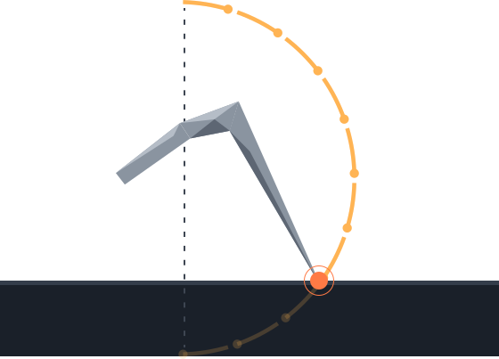
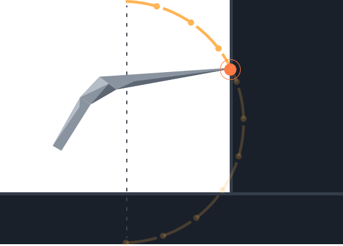
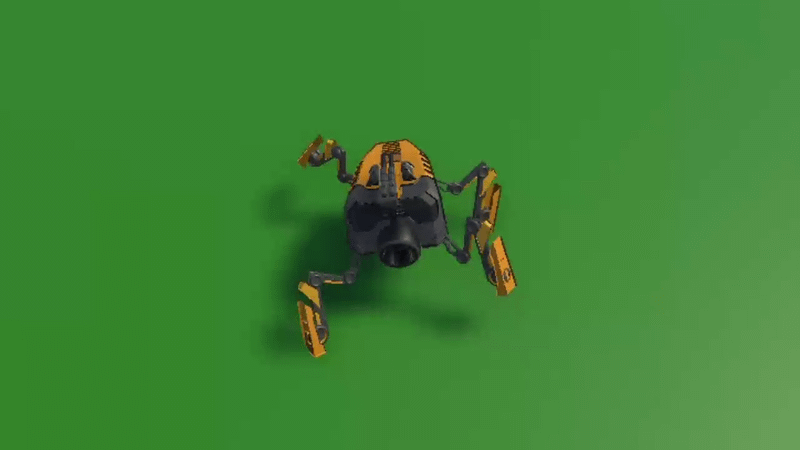
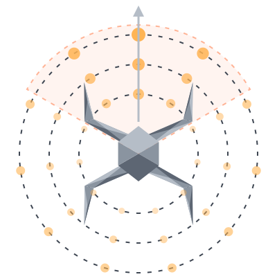
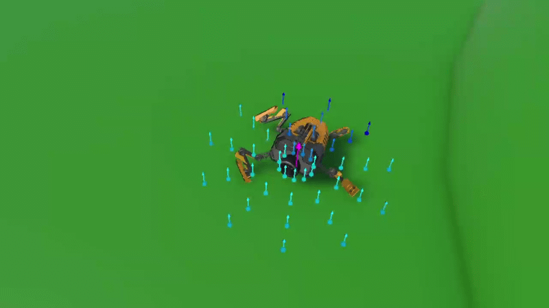
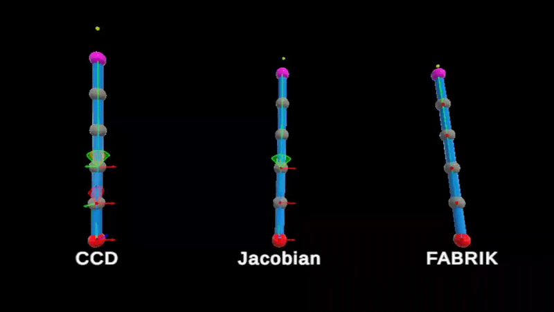
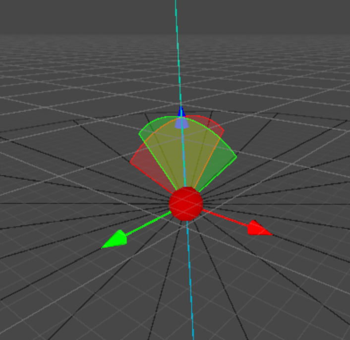
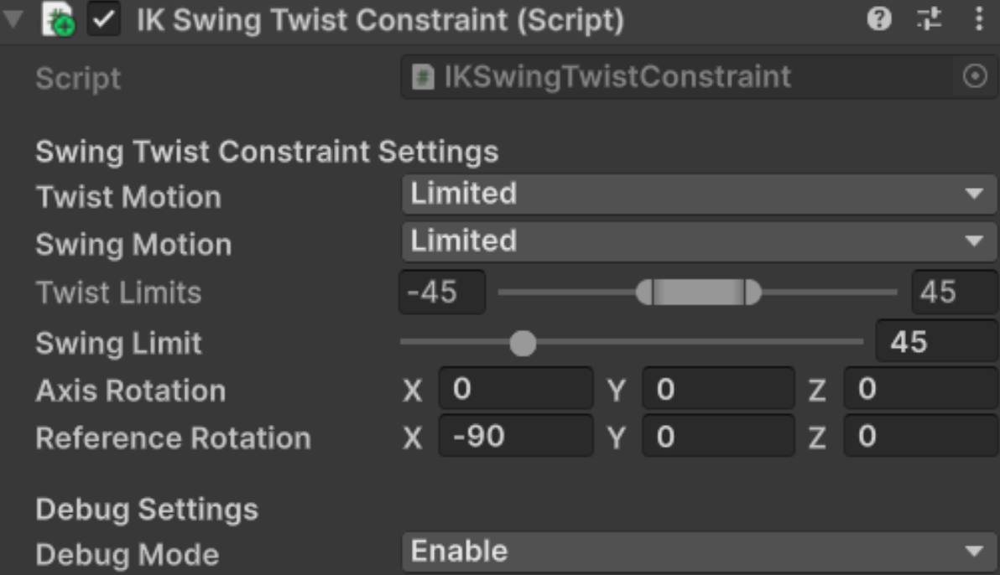

L'araignée procédurale
L'araignée est la démo du projet. Elle sert à mettre le framework IK (Inverse Kinematics) à l'épreuve dans un vrai cas d'usage. Sa démarche est entièrement procédurale et aucune animation n'est jouée. Le corps suit la surface, chaque patte décide quand faire un pas, et l'IK la place au sol comme sur un mur.
Pipeline d'une frame
- 01 SpiderIKController Lit les entrées du joueur et fait avancer et tourner l'araignée en détectant les obstacles devant elle.
- 02 SpiderIK Orchestre le cycle de pas de toutes les pattes et aligne le corps sur la surface.
- 03 SpiderIKLeg Cherche où poser sa patte, décide quand faire un pas et la déplace en arc jusqu'à sa nouvelle position.
- 04 IKSolver & Contraintes Calculent la rotation de chaque articulation pour que la patte atteigne sa cible, sans dépasser les limites de rotation fixées pour chacune.
1.1Trouver un point d'appui
Un raycast unique part dans une seule direction, il ne peut donc pas détecter à la fois le sol sous la patte et un mur devant elle. Chaque patte lance plutôt un Arc Cast, une suite de raycasts qui balaie un demi-cercle du haut vers le bas. Le premier impact devient le point d'appui, que la surface soit au sol ou sur un mur.
Schéma : même arc, deux situations


- Segments de l'arc (un raycast chacun)
- Premier impact = point d'appui
- Patte
1.2Démarche procédurale
- Le cycle de pas avance avec la distance parcourue et la rotation, pas avec le temps : la cadence suit naturellement la vitesse.
- Les pattes sont réparties en groupes déphasés qui lèvent le pied à tour de rôle, ce qui donne une démarche alternée. Le système fonctionne pour n'importe quel nombre de pattes.
- Un pas d'urgence se déclenche si un pied est trop loin, et les pattes reviennent au repos quand l'araignée s'arrête.

1.3Aligner le corps sur la surface
Le corps s'oriente selon une normale moyenne, calculée à partir de plusieurs points échantillonnés autour de l'araignée. Les points les plus éloignés et ceux situés devant elle pèsent plus, ce qui permet à l'araignée d'anticiper un mur ou une pente et de commencer à se redresser avant de l'atteindre.
Schéma : poids des points (vue de dessus)

- Taille = poids du point
- Zone avant, favorisée

Architecture du framework IK
Le framework sépare résolution, données et contraintes. Grâce à ce découpage, les solveurs sont interchangeables, et il est possible d'ajouter un nouveau solveur ou un nouveau type de contrainte sans modifier le reste du code.
Résolution
- IKSolver Oriente les articulations pour que l'effecteur atteigne la cible
- CCDIK Solveur CCD
- JacobianIK Solveur Jacobien
- FabrikIK Solveur FABRIK
Données
- IKData Décrit la chaîne d'articulations à résoudre
- IKJointData Décrit une articulation et sa contrainte éventuelle
Contraintes
- IKJointConstraint Base commune à toutes les contraintes
- IKHingeConstraint Charnière
- IKSwingTwistConstraint Rotule
- IKFixedConstraint Bloquée
Les trois solveurs
Le solveur peut s'appuyer sur trois méthodes de calcul différentes, toutes implémentées from scratch. La méthode se change directement depuis l'inspecteur, sans modifier la scène ni la chaîne d'articulations.
CCD
Ajuste chaque articulation une par une, de la fin vers la base, pour orienter l'extrémité vers la cible.
Jacobien
Utilise une matrice de dérivées pour déplacer toutes les articulations en même temps, par petits pas, jusqu'à la cible.
FABRIK
Déplace directement les articulations vers la cible puis vers la base, en gardant la longueur des segments, sans calculer d'angles.

Contraintes articulaires
Sans contraintes, une articulation peut tourner librement et se plier de manière irréaliste. Chaque articulation peut donc recevoir une contrainte qui limite ses rotations. Elle se règle directement dans l'inspecteur et peut être visualisée dans la scène.
Charnière
IKHingeConstraint
Limite la rotation à un seul axe, entre deux angles.
Rotule
IKSwingTwistConstraint
Permet à l'articulation de s'orienter dans un cône et de pivoter légèrement sur elle-même.
Fixe
IKFixedConstraint
Bloque l'articulation dans sa position de repos.


Compétences mises en œuvre
Ce projet m'a permis de mettre en œuvre un large éventail de compétences, des mathématiques 3D derrière les solveurs jusqu'aux outils de visualisation dans l'éditeur. Il m'a surtout appris à transformer des algorithmes théoriques en un système complet, réutilisable et utilisable en conditions réelles.
Mathématiques 3D
Quaternions, décomposition swing-twist, changements de repère, produit vectoriel, projections, matrice jacobienne.
Algorithmique
Méthodes itératives, critères de convergence, gestion des cas limites comme une cible hors de portée ou un vecteur nul.
Animation procédurale
Cycle de pas par phases, trajectoires pilotées par courbes, lissage indépendant du framerate.
Physique & requêtes
Raycasts, arc casts, layer masks, échantillonnage pondéré des surfaces.
Architecture
Séparation données / logique, classes abstraites, solveurs sans état, composants réutilisables.
Outils Unity
Gizmos et handles personnalisés, attributs d'inspecteur, New Input System, séparation du code éditeur.